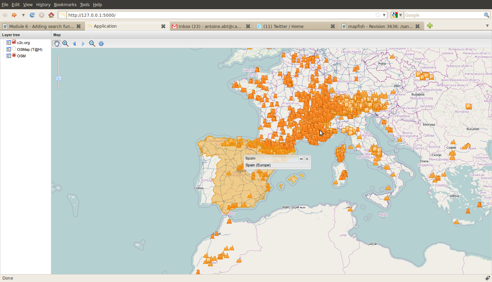

Previous topic
Module 5 – Création du service Web
Next topic
Module 7 - Personnalisation de services web
Module 5 – Création du service Web
Module 7 - Personnalisation de services web
ans ce module vous allez ajouter une fonctionnalité de recherche à l’interface utilisateur. Cette fonctionnalité de recherche sera lié au service web countries que vous avez créé dans le module précédent.
Avec cette fonctionnalité de recherche les utilisateurs pourront cliquer sur la carte pour afficher des informations sur le pays sur lequel vous cliqué dans un popup.
Nous devons créer un objet OpenLayers.Control.getFeature lié à notre contrôleur précédent, gérant le format GeoJSON :
var gf = new OpenLayers.Control.GetFeature({
protocol: new OpenLayers.Protocol.HTTP({
url: '/countries',
format: new OpenLayers.Format.GeoJSON()
})
});
En écoutant l’événement featureselected du Control, vous êtes capable d’ajouter la feature à la couche vecteur et créé un objet GeoExt.Popup ancré à ce feature, en affichant à l’intérieur les attributes de ce feature :
gf.events.on({
'featureselected': function(e){
if (arguments.callee.current_popup && arguments.callee.current_popup.anc) {
arguments.callee.current_popup.destroy();
}
var layer = map.getLayersByName('vector')[0];
layer.destroyFeatures();
layer.addFeatures([e.feature]);
arguments.callee.current_popup = new GeoExt.Popup({
feature: e.feature,
title: e.feature.data.pays,
html: e.feature.data.pays+' ('+e.feature.data.continent+')',
width: 200
});
arguments.callee.current_popup.show();
}
});
Puis nous ajoutons ce control à la toolbar, wrappé dans un objet GeoExt.Action :
actions.push(new GeoExt.Action({
iconCls: "info",
map: map,
toggleGroup: "tools",
allowDepress: false,
tooltip: "Get country information",
control: gf
}));
Et quelques définitions CSS dans le fichier mapfishapp/public/app/css/main.css :
.info {
background-image:url(../img/info.png) !important;
height:20px !important;
width:20px !important;
}
et un lien vers le CDD de GeoExt.Popup dans le fichier mapfishapp/public/index.html :
Lorsque vous cliquez sur un pays vous devriez obtenir une popup ressemblant à ceci :
[Cliquez ici pour voir la correction]
Notez que les réponses AJAX peuvent indiquer que la base de données se plaint que le code EPSG:900913 ne soit pas connu. Dans ce cas, vous devriez lancer la requête SQL suivante dans votre base de données :
INSERT INTO spatial_ref_sys (srid,auth_name,auth_srid,srtext,proj4text) VALUES
(900913,'EPSG',900913,'PROJCS["Google Mercator", GEOGCS["WGS 84",DATUM["World Geodetic System 1984", SPHEROID["WGS 84", 6378137.0, 298.257223563, AUTHORITY["EPSG","7030"]],AUTHORITY["EPSG","6326"]],PRIMEM["Greenwich", 0.0, AUTHORITY["EPSG","8901"]], UNIT["degree", 0.017453292519943295], AXIS["Geodetic latitude", NORTH], AXIS["Geodetic longitude", EAST], AUTHORITY["EPSG","4326"]], PROJECTION["Mercator (1SP)", AUTHORITY["EPSG","9804"]], PARAMETER["semi_major", 6378137.0], PARAMETER["semi_minor", 6378137.0], PARAMETER["latitude_of_origin", 0.0], PARAMETER["central_meridian", 0.0], PARAMETER["scale_factor", 1.0], PARAMETER["false_easting", 0.0], PARAMETER["false_northing", 0.0], UNIT["m", 1.0], AXIS["Easting", EAST], AXIS["Northing", NORTH], AUTHORITY["EPSG","900913"]]','+proj=merc +a=6378137 +b=6378137 +lat_ts=0.0 +lon_0=0.0 +x_0=0.0 +y_0=0 +k=1.0 +units=m +nadgrids=@null +no_defs');
Tâches en bonus
1. Changez la configuration du OpenLayers.Control.GetFeature afin qu’il envoie les requêtes lorsque l’utilisateur fait une pause sur la carte.